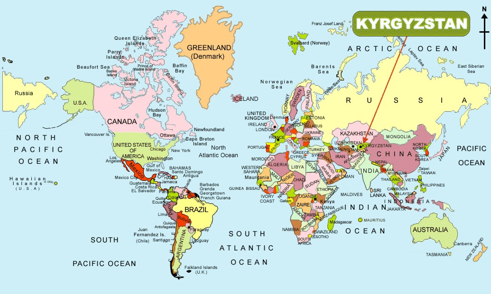

I was born in a very small country called Kyrgyz Republic. It is located in the middle of central asia. Kyrgyzstan is a melting pot of different cultures and religions, ranging from Orthodox Russians to Buddhist refugees from the Himalayas.
I moved to the United States in 2003 and settled in Montana. After a couple of years my mom and I moved to Georgia to live closer to our family.
In 2009, after graduating high school I began attending Dalton State College. After completing my Associate degree in one year, I transferred to the University of Georgia in 2010. My college experience was fantastic, and after completing my degree in International Affairs I graduated in 2013 and began working for the State of Georgia government. After a year of soul searching I realized that my passion is design and art.
I see beauty in every object and living thing, and being able to beautify something brings me joy and a sense of accomplishment. After researching the job market, I began learning web design and development at home during my free time. There is a great need for individuals who are passionate about UX/UI, especially in our technology-driven world. My goal is to make websites more accessible and user-friendly to people of all ages.